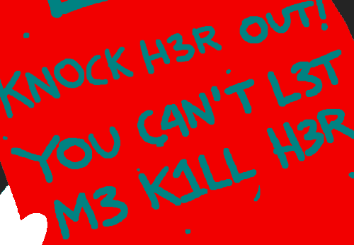
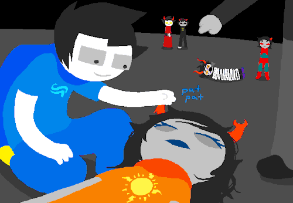
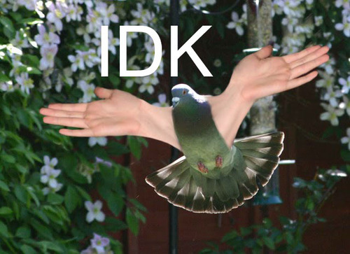

While the contradictions in John’s powers bug me, some other contradictions have continued to perplex me
TEREZI: 3V3RY CH4NG3 1 4M T3LL1NG YOU TO M4K3 W1LL H4V3 1NCR3D1BLY SUBTL3 CONS3QU3NC3S

How is this subtle at all?
And then
JOHN: but if i am really thinking hard about who i should bring back to life… JOHN: i dunno if my conscience can justify bringing back someone so… JOHN: dangerous.

JOHN: sorry for clocking you, vriska, if you can hear me in your dreams. haha, you probably can’t. JOHN: but hey, i guess this means i get to meet alive you soon, instead of ghost you? so that’s neat. KARKAT: EGBERT DON’T YOU DARE FUCK OFF JOHN: please tell her i’m sorry for punching her in the face. JOHN: but also, she’s welcome for saving her life.
He’s now suddenly ok with that??
But anyway I swore not to start complaining about this at length until updates start again, so for now I’ll leave you with

and go study Spanish.
Gonna address these IMHO in reverse order:
John has just found out that all his friends die. He sees Rose die in front of him, he sees Dirk pixellate into non-existence. He watches Terezi make directions for him in her own blood and then die in a perfect outline of her body. He trusts Terezi to guide him, and he wants to prevent everyone from dying. In the two situations he’s making two very different decisions: In the first, between a large group of people, who does he want to bring back from the dead? In the second, does he follow Terezi’s orders and stop her from killing Vriska in front of him?
The subtlety of changes hasn’t been addressed clearly yet. Now, when I was reading it I assumed the things he did would be subtle–like messing with stuffed toys–but Terezi is talking about the consequences being subtle. And as we saw in Jane’s story, we ended up in a very similar place as we did in the Game Over timeline. It’s a huge change for Vriska, obviously, and Jade as well (not sure how much for Jane at this point) but overall the consequences may be “subtle.”